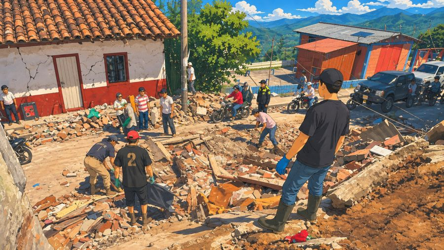
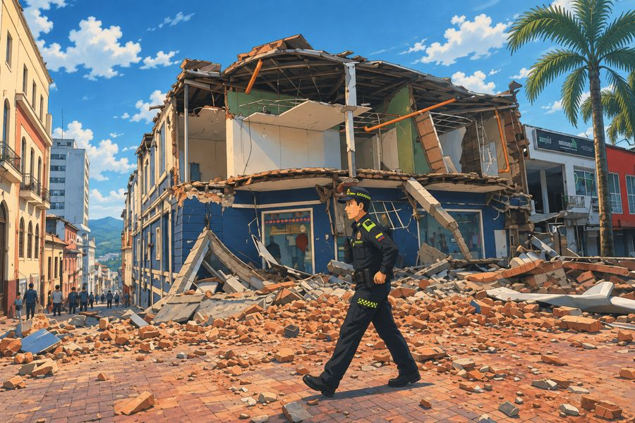
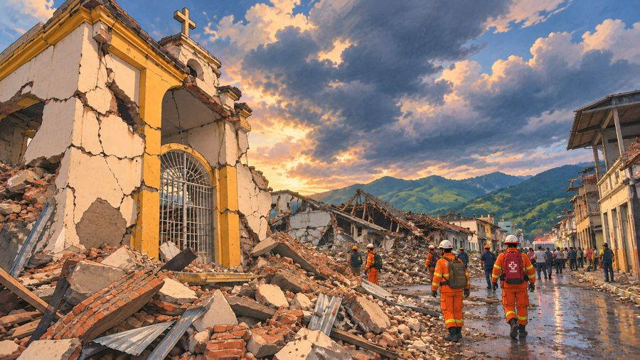
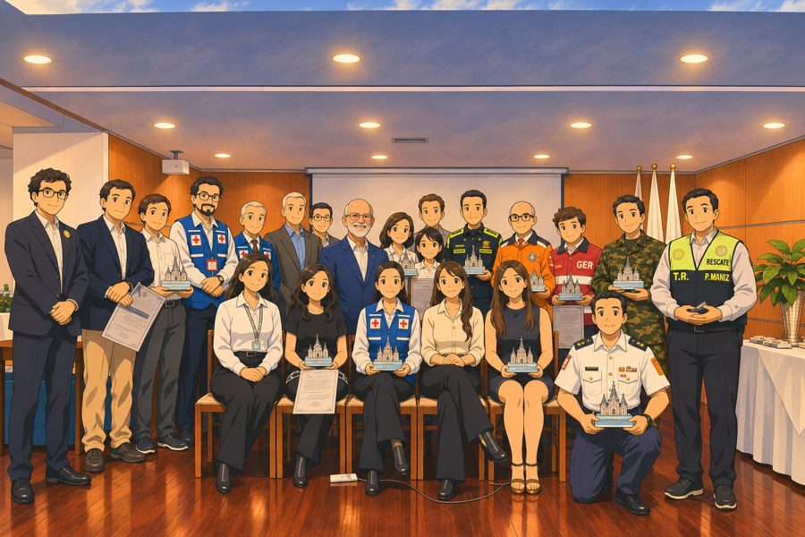

¿Cómo va la reconstrucción de Caldas?
Aquí los 27 municipios reportan, con un mismo formato, qué se dañó, qué hay que hacer, cuánto cuesta y cuánto dinero ya está asegurado. La Gobernación revisa cada reporte y publica el consolidado con su fuente y su fecha.
Sismo M 7,4 · 10 de agosto de 2026Decreto 392 · calamidad públicaLo que hay que saber
Tres preguntas, tres respuestas. Toque los términos subrayados para ver qué significan.
Del daño al proyecto financiado
Así avanza la información que reportan los municipios: de cada daño identificado a un proyecto con plata asegurada.
Caldas tiene 23.492 viviendas afectadas, y casi la mitad están en Manizales
Cada cifra se muestra con su fuente y su fecha de corte; las series no se suman ni se promedian entre sí.
Viviendas afectadas por municipio
EDAN, corte 14-sep-2026 · Manizales: 11.513 (49 %), se muestra aparte
Por subregión
EDAN, corte 14-sep-2026
| Indicador | Cifra | Fuente y corte |
|---|---|---|
| Centros de salud afectados | 18 | EDAN, 14-sep-2026 |
| Sistemas de acueducto afectados | 53 (20 municipales, 33 veredales) | EDAN; Fondo Milagro ambiental, 27-oct |
| Centros comunitarios afectados | 171 | EDAN, 14-sep-2026 |
| Familias inscritas en el RUD | 22.132 (45.324 personas) | RUD UNGRD, 27-oct-2026 |
Caldas reúne el 6 % de las personas afectadas del país y el 8,2 % del valor del plan nacional
El sismo del 10 de agosto afectó a 778.281 personas en 16 departamentos. Así se ve Caldas dentro del Plan de Acción Específico nacional de la UNGRD, que suma $58,29 billones para 2026–2030.
Personas afectadas por departamento
Porcentaje del total nacional · RUD
Valor del PAE nacional por departamento
Billones de pesos · 2026–2030
Fuente: UNGRD, PAE Sismo 2026 (documento), tablas de población, vivienda, educación y valor por departamento; RUD y sectores con corte de septiembre y octubre de 2026. Estas cifras difieren de las del EDAN que usa el resto de esta plataforma porque tienen otra fuente y otro corte: por ejemplo, 22.282 frente a 23.492 viviendas afectadas.
Caldas en el mapa
Dónde golpeó el sismo, cómo va el reporte de cada municipio y dónde están los proyectos listos para financiar. Haga clic en un municipio para ver su detalle.
Avance del reporte municipal
Estado de cada municipio en la plataforma. Las cifras son agregadas; los detalles de cada reporte son de uso de la Gobernación.
Tablero por municipio
Elija un municipio o vea el agregado de todos los que ya reportaron. También puede hacer clic en la tarjeta de un municipio.
Costo de las intervenciones por eje
Millones de pesos · el centro muestra el total
Necesidades por sector
Número de necesidades reportadas
Costo por línea del PAE
Millones de pesos · intervenciones con línea asignada
Costo por municipio
Millones de pesos · intervenciones reportadas
Lo que estamos reconstruyendo
Detrás de cada cifra de esta plataforma hay una vereda, una plaza o una casa que hay que levantar de nuevo.



Lo que pone la Gobernación: $222.500 millones
Recursos del Departamento para atender a los 26 municipios distintos de Manizales, que atiende su emergencia de forma independiente. Distribución preliminar del PAE departamental por línea estratégica.
¿De dónde sale la plata?
Cinco fuentes de financiación
¿En qué se invierte?
Siete líneas estratégicas del PAE
Lo que ya está contratado o en marcha
Apoyo económico de la UNGRD a las familias
Valor mensual del apoyo según la categoría del municipio
Cartera reportada frente al PAE
Costo de las intervenciones reportadas por los 26 municipios distintos de Manizales, comparado con la necesidad estimada por línea en el PAE departamental (19-oct-2026). Manizales se lee aparte porque el dimensionamiento departamental cubre a los otros 26.
Eje 1 · Rehabilitación
Millones de pesos · haga clic en una línea para ver qué municipios aportan
Eje 2 · Reconstrucción resiliente
Millones de pesos · haga clic en una línea para ver qué municipios aportan
Cartera por clasificar
Intervenciones que el municipio reportó sin elegir línea del PAE (FR o FAR). Mientras no se clasifiquen, no aparecen en las barras de arriba. Cada municipio las clasifica en 3 · Intervenciones.
Brecha de financiación de los proyectos
Costo de los proyectos que reportaron los municipios frente a los recursos que ya tienen confirmados. Lo que falta es lo que hay que gestionar con la Nación, el SGR, Obras por Impuestos, la cooperación o el sector privado.
Por municipio
Los 10 con mayor brecha
Por vía de financiación
Vía que el municipio eligió para cada proyecto
Cartera por plazo
Costo de las intervenciones según cuándo se ejecutan
Banco de Materiales: de la ayuda humanitaria a la vivienda reforzada
Materiales homologados que llegan a cada vivienda según el daño real, con un recorrido trazable desde la ficha EDAN hasta la obra revisada por una cuadrilla técnica.
Respuesta en las primeras horas y días tras el sismo.
Estabilización, apuntalamiento y reforzamiento de viviendas con materiales homologados y acompañamiento técnico.
Reubicación o reposición de la vivienda.
El recorrido de un kit de materiales, paso a paso
- Evaluación del dañoFicha EDAN de la vivienda
- RegistroRegistro Único de Damnificados (RUD)
- ValidaciónEl CMGRD verifica que el predio sea elegible
- Orden de despachoDigital y georreferenciada
- EntregaEn un nodo subregional o en una ferretería en convenio
- Obra acompañadaUna cuadrilla técnica valida la instalación
Cuatro componentes
- Logística descentralizada. Centros de acopio en nodos subregionales y convenios con ferreterías locales, para no saturar Manizales.
- Recursos blindados. Subcuentas del Fondo Departamental de Gestión del Riesgo o esquemas fiduciarios con apoyo de InfiCaldas.
- Focalización y control digital. Tablero georreferenciado que cruza el EDAN, el RUD y las órdenes de despacho.
- Acompañamiento de obra. Arquitectos, ingenieros y maestros de obra que revisan que el material quede bien instalado.
Qué cambia frente a la ayuda tradicional
| Respuesta tradicional | Banco de Materiales |
|---|---|
| Subsidios en dinero fragmentados | Materiales según la severidad real del daño |
| Materiales sin estándar técnico | Insumos homologados según la NSR-10 y la vivienda tradicional caldense |
| Precios expuestos a la especulación | Tarifas de emergencia pactadas con cementeras, ladrilleras y ferreterías |
| Sin rastro de la entrega | Trazabilidad digital del EDAN a la entrega |
| Autoconstrucción sin apoyo | Obra validada por cuadrillas técnicas |
Fuente: Gobernación de Caldas, «Banco de Materiales para la Reconstrucción y Recuperación Post-Sismo». Lideran la Secretaría de Vivienda y Territorio y la UDEGERD; los CMGRD y las alcaldías ejecutan en terreno. Las cifras de avance muestran su fuente y su fecha de corte.
Vivienda: cuánto se necesita, qué está en marcha y qué falta
Balance de los 26 municipios distintos de Manizales, que atiende su emergencia de forma independiente, más el proyecto Reserva Santa María de la Gobernación en Manizales. Remitido al Fondo Milagro para gestionar los recursos.
Los cuatro componentes
Verde: unidades atendidas o con fuente identificada. Naranja: pendientes de financiación.
Casas del campo: quién las paga
663 viviendas rurales destruidas · $99,8 millones por vivienda
Valor por casa por aclarar: la carta de la Secretaría usa $99,8 millones por vivienda; el proyecto de las 29 casas del Departamento (BPID AMB-E-260098, $1.926,7 millones) da unos $66,4 millones.
Casas averiadas: dos caminos
Casas de los pueblos: dónde ya hay lote
Demoliciones: 393 edificaciones en 12 municipios
Inventario reportado por los municipios y remitido al Fondo Milagro con el oficio S.V 1198 (17 de noviembre). El costo total se establecerá en la estructuración.
¿Qué hay que demoler?
Valores reportados por los municipios
¿En qué va el trámite de cada demolición?
Cruce con el empréstito departamental (Ordenanza 1021 de 2026)
Componentes de vivienda del balance
Proyectos del empréstito en los municipios con demoliciones
Colegios: cómo quedaron y en qué va su recuperación
Revisión sede por sede de los colegios oficiales de los 26 municipios a cargo de la Secretaría de Educación departamental. Manizales tiene su propia secretaría de educación y no está incluida.
¿Cómo quedaron las sedes?
Número de sedes según el nivel de afectación del censo del sismo
¿Qué se va a hacer?
Plan de acción por sede
¿En qué va cada sede?
Estado de la intervención
¿Quién está interviniendo?
Sedes con intervención reportada
Por municipio
Ordenado por sedes que esperan estudios y diseños. Haga clic en un encabezado para ordenar.
Las 140 sedes con prioridad 1 para estudios y diseños · ver lista
Tablero de la respuesta departamental
Lo que ha hecho la Gobernación de Caldas desde el 10 de agosto, en cifras. Cada dato muestra su fecha de corte y su fuente; el equipo coordinador las actualiza desde su panel.

Ayuda humanitaria entregada
Unidades acumuladas en cada corte
Subsidio departamental de arrendamiento
Familias beneficiarias acumuladas · el valor girado acompaña cada corte
Apoyo económico de la UNGRD
Giros acompañados por la Gobernación
Giros pendientes por cobrar
Por municipio
Portafolio inicial de reconstrucción
Proyectos por tipo
Recursos de la emergencia
Millones de pesos · montos de fuentes distintas: no se suman entre sí
Acciones de la Gobernación
Del día cero a hoy. El equipo coordinador mantiene esta cronología al día.
Calendario y vencimientos
Días restantes de cada hito. Ritmo de reporte: actualización municipal cada quince días y corte consolidado mensual.
Documento del PAE Caldas
Descargue el Plan de Acción Específico con la Cartera Única a la última fecha de corte. Cada versión conserva su corte, así puede ver cómo avanza el plan.
Versiones anteriores
Todas siguen disponibles para consulta.
El documento es preliminar. Las cifras municipales reproducen lo que cada municipio envió a esta plataforma y pueden cambiar con la validación técnica de la Gobernación; no constituyen aprobación de proyectos ni disponibilidad de recursos. Las cifras del consolidado de esta página se actualizan en tiempo real y pueden ser más recientes que la última versión del documento.
Glosario
Las siglas y términos que usa esta plataforma, en palabras simples.
Proyectos Fase III
Proyectos que los municipios reportan con estudios y diseños definitivos (Fase III de la MGA: factibilidad) o ya listos para gestionar recursos. Son los que pueden presentarse de inmediato al Fondo Milagro, al SGR, a la Subcuenta Sismo 2026, a obras por impuestos o a cooperación.
Cargando…Proyectos de la Gobernación de Caldas
Proyectos que estructura y gestiona la Gobernación: en ejecución, en contratación, viabilizados y en viabilización, más los de infraestructura social para atender la calamidad del sismo. Corte: .
Obras por Impuestos para la reconstrucción
Su impuesto de renta puede convertirse en hospitales, centros para la primera infancia, estaciones de bomberos y plazas de mercado y la reconstrucción del campus universitario de Palogrande en los municipios afectados por el sismo. Conozca la cartera de 10 proyectos y la ruta para vincular a su empresa.
El marco: Decreto Legislativo 1389 de 2026
Expedido el 9 de septiembre de 2026 en desarrollo del Estado de Emergencia Económica, Social y Ecológica (Decreto 1261, modificado por el 1348), crea una modalidad especial y temporal de Obras por Impuestos exclusiva para reconstruir los territorios afectados por el terremoto del 10 de agosto.
Qué destraba frente al régimen ordinario
Líneas de inversión habilitadas
Artículo 4
Quién hace qué
Institucionalidad del mecanismo
El decreto rige desde su publicación y mientras se mantengan los efectos del Estado de Emergencia.
Portafolio: 10 proyectos para vincular
Cartera de proyectos elegibles para Obras por Impuestos en la modalidad especial del Decreto 1389. Cada ficha muestra la propuesta y, cuando existe, el estado actual de la edificación afectada.
Fuente: Fichas de proyectos «Caldas, Reconstruir es Avanzar» y presentación de la Secretaría de Planeación, Gobierno de Caldas. Plaza de Mercado de Riosucio: ficha de proyecto e Informe Público de Situación de EMSA E.S.P. (noviembre de 2026). Campus Palogrande: Plan Maestro Campus Palogrande 2027–2050, Vicerrectoría de Sede y Dirección de Ordenamiento y Desarrollo Físico, Universidad Nacional de Colombia sede Manizales. Las imágenes de los proyectos son referencias de diseño.
La ruta: de la idea al pacto empresarial en 6 semanas
«Caldas Nos Mueve» es el vehículo departamental para movilizar inversión privada hacia la reconstrucción por medio de Obras por Impuestos.
Cronograma de implementación
Las 8 etapas operativas en 6 semanas; la etapa 8 arranca en la semana 6 y sigue hasta que terminen las obras.
¿Su empresa quiere convertir su impuesto en reconstrucción?
El equipo de la Gobernación de Caldas acompaña a cada empresa desde la manifestación de interés hasta la vinculación del proyecto al mecanismo: análisis del proyecto, estructuración técnica, financiera y jurídica, y seguimiento público de la obra.
Municipio
Panel de la Gobernación
Acceso de consulta · PNUD: puede ver los 27 reportes, descargar los consolidados y dejar observaciones. Validar, devolver y editar es exclusivo de la Gobernación.